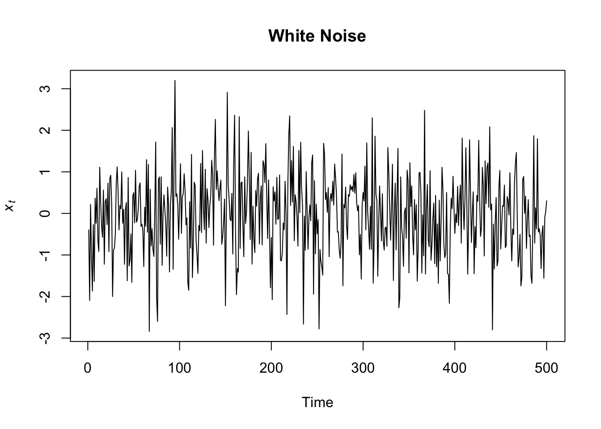
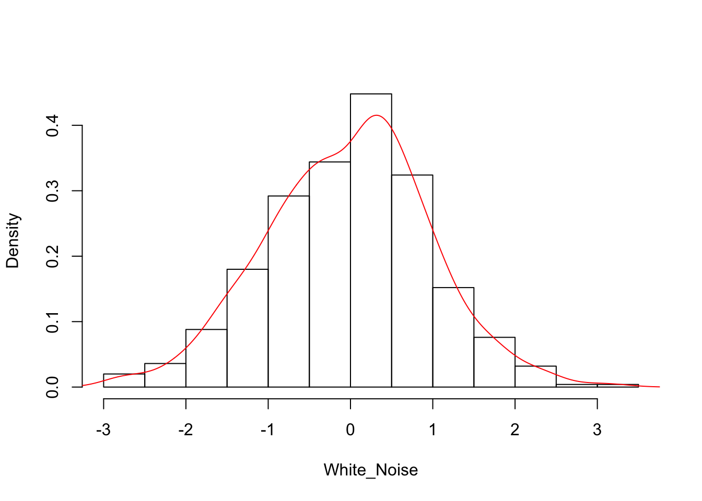
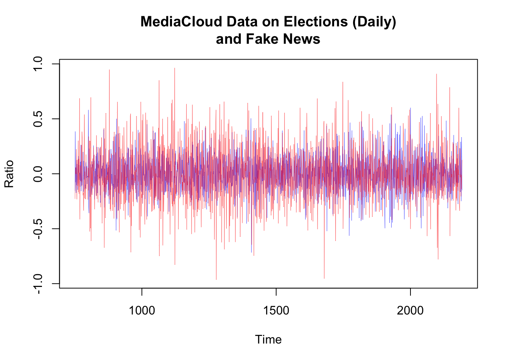
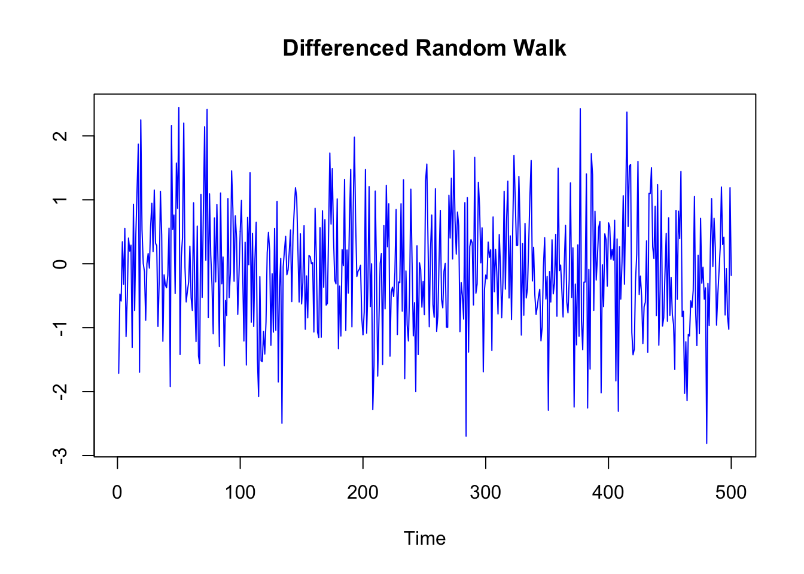
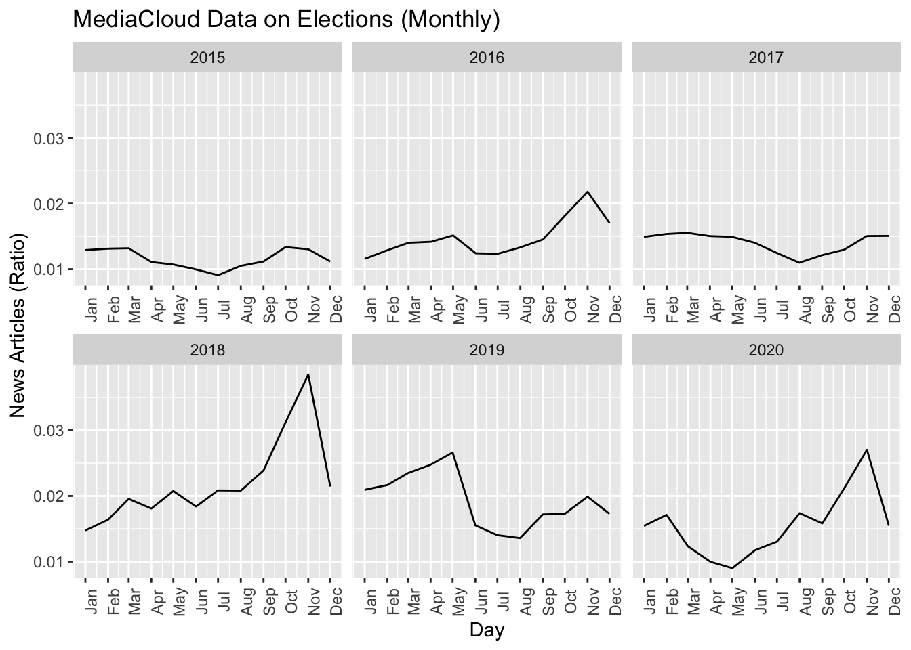

Chapter 6 Plot Time Series
6.1 Plot Time Series Objects
In this part of the course we will learn how to plot time series data. We will take into account three main functions: ggplot from the tidyverse library, plot.ts from base R, and plot.xts from the xts library.
We will learn how to plot time series, and how to manipulate the data as a necessary step to visualize them.
In the next chapter, we will use what we have learn to visualize time series data as a part of a preliminary, exploratory time series analysis.
We use the function ggplot to create the plot of the series. Note that the function works because we previously have change the format of the “date” column with as.Date, otherwise we would have had issues.
We place our data set (“elections_news”) before the ggplot function and followed by the pipe symbol (%>%), because it is easier to be consistent with the changes in the code we will made during the course, but it is common to place it inside the parenthesis following the ggplot command.
The code says something like: “R, take the data set called”elections_news“, and perform the following operation with the data: plot the data as a line (”geom_line“) on a cartesian plan where on the x-axis there are the values of the column”date“, and on the y-axis the values of the variable”ratio“. Use the color blue for the line, and a size of 0.5. Additionally, write the label”News Articles" next to the axis y, and the label “Date” next to the axis x.
elections_news %>%
ggplot() +
geom_line(aes(x = date, y = ratio), col = "blue", size = 0.5) +
ylab("News Articles") +
xlab("Date")
To plot a ts object you can simply rely on the function plot(), or better, the function plot.ts(), more appropriate for time series objects.
In the function plot.ts you can specify a label for the y axis, (ylab=“your label”), and also for the x axis, if you want (xlab=“your label”).

The function plot.ts() has many arguments and you can use them to customize your plot. To see how the function works and how you can customize your plots, just write ?plot.ts in the console and read the help section.
For instance, we can give the plot a title, set the axis labels, the color (use colors() to see the list of standard colors in R) and the size of the line.
plot.ts(AirPassengers,
main = "PASSENGERS",
ylab = "Passengers (1000's)", xlab = "Time (1949-1960 monthly data)",
col = "red",
lwd=5)
To plot a xts object we can similarly use the plot.xts function.
plot.xts(xts_format,
main = "PASSENGERS",
ylab = "Passengers (1000's)", xlab = "Time (1949-1960 monthly data)",
col = "steelblue2",
lwd=5)
6.2 Handle Dates and Times
Although it does not necessarily give problems, it’s not the best solution having a date variable coded as a factor. The most appropriate format for date variables is the format “date”. Since date and time are a very important variable in time series analysis, it is important to learn to handle them correctly. We convert the format of the date column to “Date” through the function as.Date(), specifying the format of our date.
## 'data.frame': 2192 obs. of 4 variables:
## $ date : Date, format: "2015-01-01" "2015-01-02" "2015-01-03" ...
## $ count : int 373 387 289 322 567 626 507 521 531 346 ...
## $ total_count: int 25611 31932 24646 25513 39982 42366 45163 44928 44041 29093 ...
## $ ratio : num 0.0146 0.0121 0.0117 0.0126 0.0142 ...R use specific codes for formatting dates and times (you can read about it at the following link: https://www.stat.berkeley.edu/~s133/dates.html).
You can also change the format of the date by using the function format() and specifying the appropriate codes. Let’s pick up 5 dates at random and let’s apply the function. We also store the variables we create in a data.frame (just for a better visualization). You can see that the format of the date changes to factor, but the transformation could be useful in certain circumstances.
dates_example <- sample(elections_news$date, size = 5)
data.frame("Format_1" = dates_example,
"Format_2" = format(dates_example,"%d/%m/%Y"),
"Format_3" = format(dates_example,"%A, %B %d (%Y)"))## Format_1 Format_2 Format_3
## 1 2017-08-23 23/08/2017 Wednesday, August 23 (2017)
## 2 2019-12-26 26/12/2019 Thursday, December 26 (2019)
## 3 2017-09-03 03/09/2017 Sunday, September 03 (2017)
## 4 2020-03-20 20/03/2020 Friday, March 20 (2020)
## 5 2019-03-22 22/03/2019 Friday, March 22 (2019)Just to make an example with date and times, we upload the following file. Let`s set aside for now that the series is not regular, and focus just on the format of the date_time variable.
## date_time score
## 1 2012-01-08 21:39:15 0.004061633
## 2 2012-01-10 22:07:54 0.150770079
## 3 2012-01-14 11:15:14 0.457829612
## 4 2012-01-16 18:30:46 0.485773450
## 5 2012-01-18 12:16:56 0.121030670
## 6 2012-01-19 16:03:07 0.465606862If we use the function as.Date() on this data, we get a date without the hours.
## [1] "2012-01-08" "2012-01-10" "2012-01-14" "2012-01-16" "2012-01-18" "2012-01-19"To represent calendar dates and times properly, we can use the function as.POSIXct(). We can set also the appropriate time zone (tz). A time zone is a designated area of the globe that observes a uniform standard time (https://en.wikipedia.org/wiki/Time_zone)
date_time_example$date_time <- as.POSIXct(date_time_example$date_time, tz="UTC")
str(date_time_example)## 'data.frame': 100 obs. of 2 variables:
## $ date_time: POSIXct, format: "2012-01-08 21:39:15" "2012-01-10 22:07:54" "2012-01-14 11:15:14" ...
## $ score : num 0.00406 0.15077 0.45783 0.48577 0.12103 ...Once converted in POSIXct format, we can round or truncate our date time by minutes, hours, and days, if we want. We also need to apply again the function as.POSIXct().
By ispecting the results is easy to understand the difference between “round” and “trunc”.
date_time_example$round_mins <- as.POSIXct(round(date_time_example$date_time, "mins"))
date_time_example$trunc_mins <- as.POSIXct(trunc(date_time_example$date_time, "mins"))
date_time_example$round_hours <- as.POSIXct(round(date_time_example$date_time, "hours"))
date_time_example$trunc_hours <- as.POSIXct(trunc(date_time_example$date_time, "hours"))
date_time_example$round_days <- as.POSIXct(round(date_time_example$date_time, "days"))
date_time_example$trunc_days <- as.POSIXct(trunc(date_time_example$date_time, "days"))
date_time_example$round_months <- as.POSIXct(round(date_time_example$date_time, "months"))
date_time_example$trunc_months <- as.POSIXct(trunc(date_time_example$date_time, "months"))
date_time_example$round_years <- as.POSIXct(round(date_time_example$date_time, "years"))
date_time_example$trunc_years <- as.POSIXct(trunc(date_time_example$date_time, "years"))
head(as_tibble(date_time_example))## # A tibble: 6 x 12
## date_time score round_mins trunc_mins round_hours
## <dttm> <dbl> <dttm> <dttm> <dttm>
## 1 2012-01-08 21:39:15 0.00406 2012-01-08 21:39:00 2012-01-08 21:39:00 2012-01-08 22:00:00
## 2 2012-01-10 22:07:54 0.151 2012-01-10 22:08:00 2012-01-10 22:07:00 2012-01-10 22:00:00
## 3 2012-01-14 11:15:14 0.458 2012-01-14 11:15:00 2012-01-14 11:15:00 2012-01-14 11:00:00
## 4 2012-01-16 18:30:46 0.486 2012-01-16 18:31:00 2012-01-16 18:30:00 2012-01-16 19:00:00
## 5 2012-01-18 12:16:56 0.121 2012-01-18 12:17:00 2012-01-18 12:16:00 2012-01-18 12:00:00
## 6 2012-01-19 16:03:07 0.466 2012-01-19 16:03:00 2012-01-19 16:03:00 2012-01-19 16:00:00
## # … with 7 more variables: trunc_hours <dttm>, round_days <dttm>, trunc_days <dttm>,
## # round_months <dttm>, trunc_months <dttm>, round_years <dttm>, trunc_years <dttm>6.3 Aggregate Observations
In time series, the frequency at which observations are taken is assumed to be regular. Unfortunately, very often data are incomplete, or using daily data across many years we can meet leap years with 366 instead of 365 days, and so on.
To deal with these problems we need strategies. As an example, in presence of daily data spanning many years, we might want to aggregate the observation in months and, for instance, take the average values of the days in each month.
Aggregate observations is a data manipulation task. We can use both basic R functions or Tidyverse. We now consider a tidyverse approach. We start from the original data frame.
elections_news_monthly <- elections_news %>%
# convert date column in a as.POSIXct format
mutate(date = as.POSIXct(date)) %>%
# truncate the date at a monthly level, calling again the as.POSIXct function
mutate(month = as.POSIXct(trunc(date, "month"))) %>%
# group data by month
group_by(month) %>%
# summarize the data by using the average
summarize(average_ratio = mean(ratio))## # A tibble: 6 x 2
## month average_ratio
## <dttm> <dbl>
## 1 2015-01-01 00:00:00 0.0129
## 2 2015-02-01 00:00:00 0.0131
## 3 2015-03-01 00:00:00 0.0132
## 4 2015-04-01 00:00:00 0.0111
## 5 2015-05-01 00:00:00 0.0107
## 6 2015-06-01 00:00:00 0.00997We can look at the start and end date of the series by using the function “head” and “tail”, indicating to extract just 1 value (the first and the last one).
## [1] "2015-01-01 CET"## [1] "2020-12-01 CET"Now we can create a “ts” or “xts” time series object with monthly news media data on “elections”. We need to specify the column that contains the data, the time of the first and last observation, and the frequency of the data, which in this case is a monthly frequency.
elections_news_monthly_ts <- ts(data = elections_news_monthly$average_ratio,
start = c(2015, 01), end = c(2020, 12),
frequency = 12)And here it is our brand-new time series ts object.
## Jan Feb Mar Apr May Jun Jul
## 2015 0.012912979 0.013129067 0.013194189 0.011098454 0.010715705 0.009965726 0.009093045
## 2016 0.011572940 0.012884552 0.014020827 0.014176515 0.015142212 0.012419896 0.012352255
## 2017 0.014920648 0.015368007 0.015542559 0.015040222 0.014923517 0.014033210 0.012484787
## 2018 0.014746712 0.016387355 0.019550906 0.018077469 0.020748120 0.018384512 0.020848713
## 2019 0.020930706 0.021663593 0.023481836 0.024754292 0.026618620 0.015513945 0.014032455
## 2020 0.015427546 0.017116988 0.012344645 0.009973017 0.009000833 0.011735883 0.013033643
## Aug Sep Oct Nov Dec
## 2015 0.010513101 0.011176887 0.013368316 0.013037089 0.011173882
## 2016 0.013319360 0.014525895 0.018165145 0.021795226 0.017023243
## 2017 0.010990920 0.012142076 0.012965708 0.015048326 0.015074379
## 2018 0.020813585 0.023878970 0.031206151 0.038497943 0.021428382
## 2019 0.013579769 0.017183966 0.017279698 0.019885423 0.017271081
## 2020 0.017377946 0.015818565 0.021178313 0.027026379 0.015476051We can plot our time series by using the plot.ts function.
plot.ts(elections_news_monthly_ts,
main = "MediaCloud Data on Elections",
ylab="News Articles",
col = "purple3",
lwd = 5)
We can also use xts:
elections_news_monthly_xts <- xts(x = elections_news_monthly$average_ratio,
order.by = elections_news_monthly$month, frequency = 12)
plot.xts(elections_news_monthly_xts,
main = "MediaCloud Data on Elections",
ylab="News Articles",
col = "purple3",
lwd = 5)
Now, we save our monthly time series object of class “ts” in the folder “data” for further analysis.
6.4 Incomplete Data Points
Another problem we often have to deal with when we analyze time series is related to incomplete data points. In this case we need to complete the data.
First of all we need to create the missing date-time slots, if there are any. We are going to fill them with 0 since we consider that point missing just because they have zero events in them. However, this is not necessarily the case, and if they are missing for other reason we should fill them with NA and choose an approach to handle them.
For instance, the following time series lacks the first four days of the first year of data. Not only the data are missing, but also the time slots.
## date count total_count ratio
## 5 2015-01-05 567 39982 0.01418138
## 6 2015-01-06 626 42366 0.01477600
## 7 2015-01-07 507 45163 0.01122600
## 8 2015-01-08 521 44928 0.01159633
## 9 2015-01-09 531 44041 0.01205695
## 10 2015-01-10 346 29093 0.01189290To create the necessary time slots, we can use the function complete() in the package “tidyverse”.
elections_news_complete <- elections_news_incomplete %>%
complete(date = seq(as.Date("2015-01-01"), max(date), by = "1 day")) %>%
mutate(ratio = ifelse(is.na(ratio), 0, ratio))Now we can plot our completed time series using the ggplot() function. You can just copy the previous code and change some parameters (first of all the name of the dataset).
elections_news_complete %>%
ggplot() +
geom_line(aes(x = date, y = ratio), col = "blue", size = 0.75) +
ylab("News Articles") +
ggtitle("MediaCloud Data on Elections (Daily)")
6.5 Plot Many Time Series
You can plot two (or more than two) time series together. This could be useful to have a look at their possible relations. The two time series must have the same starting date, the same ending date, and the same frequency.
In base R, the time series have to be merged in one “ts” object by using the function ts.union(). You can plot both the time series in the same plot, or create two different plot, by using the option “plot.type”.
AirPassengers_2 <- sample(x = length(AirPassengers))
AirPassengers_two_series <- ts.union(AirPassengers, AirPassengers_2)
plot.ts(AirPassengers_two_series,
main = "MediaCloud Data on Elections (Daily)\nand Random Sample",
col = c("blue", "red"),
lty=c(1, 1), lwd=c(1, 1),
plot.type = "single")
plot.ts(AirPassengers_two_series,
main = "MediaCloud Data on Elections (Daily)\nand Random Sample",
col = "blue",
lty=1, lwd=1,
plot.type = "multiple")
To plot the series with ggplot2, we can use the function grid.arrange in the library gridExtra to combine many plots together.
##
## Attaching package: 'gridExtra'## The following object is masked from 'package:dplyr':
##
## combinep1 <- elections_news %>%
ggplot() +
geom_line(aes(x = date, y = ratio), col = "black", size = 0.5) +
ylab("News Articles (ratio)") +
xlab("Date") +
ggtitle("MediaCloud Data on Elections (Daily)")
p2 <- elections_news %>%
ggplot() +
geom_line(aes(x = date, y = count), col="red", size=0.5) +
ylab("News Articles (count)") +
xlab("Date") +
ggtitle("MediaCloud Data on Elections (Daily)")
grid.arrange(p1,p2)
We can also plot two series in the same plot.
elections_news %>%
ggplot() +
geom_line(aes(x = date, y = ratio*10^4), col = "black", size = 0.5) +
geom_line(aes(x = date, y = count), col="red", size=0.5) +
ylab("Black = Ratio (x10^4)\nRed = Count") +
xlab("Date") +
ggtitle("MediaCloud Data on Elections (Daily)") 
Plotting a time series has an important role in a preliminary phase of the analysis. A simple plot can give us many information about the nature of our time series.
elections_news <- read.csv("./data/elections-stories-over-time-20210111144254.csv")
elections_news$date <- as.Date(elections_news$date)library(tidyverse)
elections_news_monthly <- elections_news %>%
# convert date column in a as.POSIXct format
mutate(date = as.POSIXct(date)) %>%
# truncate the date at a monthly level, calling again the as.POSIXct function
mutate(month = as.POSIXct(trunc(date, "month"))) %>%
# group data by month
group_by(month) %>%
# summarize the data by using the average
summarize(average_ratio = mean(ratio))6.6 Moving Average Visualization
First of all, we can see that plotting our time series at different resolutions (i.e., days and months) results in more (daily) or less (monthly) complex or “noisy” series. Aggregating daily values by taking their average (in this case) the series becomes easier to read. Its general characteristics become more evident (at the expenses of details).
daily_series <- ggplot(elections_news) +
geom_line(aes(x = date, y = ratio), col = "black", size = 0.5) +
ylab("News Articles (Ratio)") +
xlab("Day") +
ggtitle("MediaCloud Data on Elections (Daily)")
monthly_series <- ggplot(elections_news_monthly) +
geom_line(aes(x = month, y = average_ratio), col = "black", size = 0.5) +
ylab("News Articles (Ratio)") +
xlab("Day") +
ggtitle("MediaCloud Data on Elections (Monthly)")
gridExtra::grid.arrange(daily_series, monthly_series, nrow=2)
In this respect, a common method for time series visualization is moving average. This approach replace each value with the average of the close values. A central element in moving average is the “width of the window”, which differentiates different moving average approaches.
- Centered moving average, based on a window centered around time t (a few days before and after time t)
- Trailing moving average, based on a window form time t and backwards
By using the moving average we try to remove noise (the random component) from the time series as well as cyclical oscillations (the seasonal and cyclic component) that make the series more difficult to interpret. By doing so, we allow some characteristics of the series, and specifically the trend and level of the series, to show up.
To calculate the moving average we need to install and load the package “zoo”, and use the function “rollmean”. We try to use a 12 months windows with this monthly data.
As you can see, the moving average series is truncated at the beginning and at the end of the series. This is due to the fact that the centered moving average method needs 6 months before and after each data point, so the moving average is not defined for the first and last 6 data points.
By looking at the moving average lines, you can now clearly see an oscillation in the series, which increases in the second half of 2016, the again in the second half of 2018 and the first half of 2019 (and then peak out again in the second half of 2020).
How can we interpret these peak in the U.S. news media articles mentioning the term “elections”? Well, we know that on November 8, 2016, and November 6, 2018 (and also on November 3, 2020) were held the United States elections.
# install.packages("zoo")
library(zoo)
elections_news_monthly %>%
mutate(ratio_rollmean = rollmean(average_ratio, 12, fill = NA)) %>%
ggplot() +
geom_line(aes(x = month, y = average_ratio), col = "black", size = 0.5) +
geom_line(aes(x = month, y = ratio_rollmean), col = "red", size = 1) +
ylab("News Articles (Ratio)") +
xlab("Month") +
ggtitle("MediaCloud Data on Elections (Monthly)\nMoving Average Chart") ## Warning: Removed 11 row(s) containing missing values (geom_path).
6.7 Zooming
When the series is long, it can be useful to zoom in to examine more closely a shorter time windows. With reference to our monthly time series of news on elections, we could zoom in the second part of 2016, 2018, and 2020.
To focus on a shorter time window, we can subset the data by using the function “filter”, and saying we want the data corresponding to 2016, or 2017, or also more specific time frame such as between January and March 2018. Besides filtering the data, we add a function “scale_x_datetime”, which control the labels on the x-axis, specifying we want monthly labels.
elections_news_monthly %>%
filter(month >= "2016-01-01" & month < "2017-01-01") %>%
ggplot() +
geom_line(aes(x = month, y = average_ratio), col = "black", size = 0.5) +
scale_x_datetime(breaks="month") +
ylab("News Articles (Ratio)") +
xlab("Day") +
ggtitle("MediaCloud Data on Elections (Monthly) - 2016")
elections_news_monthly %>%
filter(month >= "2017-01-01" & month < "2018-01-01") %>%
ggplot() +
geom_line(aes(x = month, y = average_ratio), col = "black", size = 0.5) +
scale_x_datetime(breaks="month") +
ylab("News Articles (Ratio)") +
xlab("Day") +
ggtitle("MediaCloud Data on Elections (Monthly) - 2017")
elections_news_monthly %>%
filter(month >= "2018-01-01" & month <= "2018-03-01") %>%
ggplot() +
geom_line(aes(x = month, y = average_ratio), col = "black", size = 0.5) +
scale_x_datetime(breaks="month") +
ylab("News Articles (Ratio)") +
xlab("Day") +
ggtitle("MediaCloud Data on Elections (Monthly) - January-March 2018")
We could also divide the time frame into different parts and visualizing all these part together. For instance, we may want to visualize the data by year. To do so:
- We create a new variable corresponding to years, first, and then we plot the graph adding the function “facet_wrap” and indicating the variable “Year” we have just created. The function facet_wrap splits the plot into many different plots according to the requested variable.
- To visualize correctly our data we also need to add the option “scales =”free_x"" into facet_wrap, to visualize the x-axis with an appropriate scale
- We also add the option “date_labels” into “scale_x_datetime” to change the format of the label to a more appropriate format (in this case we are interested just in the month so we use the code “%b”. See here the codes for different date and time formats https://www.stat.berkeley.edu/~s133/dates.html).
- Finally, since we have many labels, we rotate them using the function “theme” specyfing the appropriate arguments
# incomplete code
elections_news_monthly %>%
mutate(Year = as.POSIXct(trunc(month, "year"))) %>%
ggplot() +
geom_line(aes(x = month, y = average_ratio), col = "black", size = 0.5) +
facet_wrap(~Year) +
scale_x_datetime(breaks="month") +
ylab("News Articles (Ratio)") +
xlab("Day") +
ggtitle("MediaCloud Data on Elections (Monthly)")
# complete code
elections_news_monthly %>%
# create a new variable Year to split the data accordingly
mutate(Year = as.POSIXct(trunc(month, "year"))) %>%
# ... and format it by keeping just the year value (i.e. 2016, 2017 etc.)
mutate(Year = format(Year, "%Y")) %>%
ggplot() +
geom_line(aes(x = month, y = average_ratio), col = "black", size = 0.5) +
# split the plot in differnt plots by years, using appropriate x-axis scales
facet_wrap(~Year, scales = "free_x") +
# label the x axis with month in the format %b
scale_x_datetime(breaks="month", date_labels = "%b") +
# rotate the x lables
theme(axis.text.x = element_text(angle = 90)) +
ylab("News Articles (Ratio)") +
xlab("Day") +
ggtitle("MediaCloud Data on Elections (Monthly)")
Now we can see better the peaks, which are on November 2016, November 2018, May 2019, and November 2020. The peaks in November coincide with the US Presidential elections (including the mid-term elections), and the peak in May 2019 may correspond to the Pennsylvania’s 12th congressional district special election (May 21) to fill vacancies during the 116th U.S. Congress.
6.8 Find and Annotate Peaks
Once we have detected peaks - unusual changes often due to some external phenomena that impact on the time series, which attract our attention and requires an explanation, it is a common practice to label the time series chart with a few words to indicate the phenomenon with which the peak is associated to make it more informative.
We can extract the highest values through a few lines of code to be sure of where the peaks are located. The data can add additional information to what previous deducted just by looking at the plot. In this example we are going to label just label a few peaks.
## # A tibble: 15 x 2
## month average_ratio
## <dttm> <dbl>
## 1 2018-11-01 00:00:00 0.0385
## 2 2018-10-01 00:00:00 0.0312
## 3 2020-11-01 00:00:00 0.0270
## 4 2019-05-01 00:00:00 0.0266
## 5 2019-04-01 00:00:00 0.0248
## 6 2018-09-01 00:00:00 0.0239
## 7 2019-03-01 00:00:00 0.0235
## 8 2016-11-01 00:00:00 0.0218
## 9 2019-02-01 00:00:00 0.0217
## 10 2018-12-01 00:00:00 0.0214
## 11 2020-10-01 00:00:00 0.0212
## 12 2019-01-01 00:00:00 0.0209
## 13 2018-07-01 00:00:00 0.0208
## 14 2018-08-01 00:00:00 0.0208
## 15 2018-05-01 00:00:00 0.0207To create the annotation in ggplot we use the function “annotate”, to label the data point, and “geom_segment”, to trace a line that connects the data point to the label.
You can learn more about annotation in ggplot here: https://ggplot2-book.org/annotations.html And about lines here: https://ggplot2.tidyverse.org/reference/geom_segment.html
elections_news_monthly %>%
ggplot() +
geom_line(aes(x = month, y = average_ratio), col = "grey20", size = 1) +
ylim(c(0, 0.06)) +
# 1 EVENT
annotate("label", x = as.POSIXct("2018-11-01"), y = 0.058,
label = "Midterm Elections\nNovember 2018", color = "white", fill="orange", fontface="bold", size=3) +
# add a line. You can also use an arrow by adding in geom_segment:
# arrow = line(length = unit(0.2, "cm"), ends = "last")
geom_segment(aes(x = as.POSIXct("2018-11-01"), xend = as.POSIXct("2018-11-01"), y = 0, yend = 0.054),
color = "orange", size = 0.2, linetype = 1) +
# 2 EVENT
annotate("label", x = as.POSIXct("2019-05-01"), y = 0.045,
label = "Pennsylvania Elections\nMay 2019", color = "white", fill="orange", fontface="bold", size=3) +
geom_segment(aes(x = as.POSIXct("2019-05-01"), xend = as.POSIXct("2019-05-01"), y = 0, yend = 0.041),
color = "orange", size = 0.2, linetype = 1) +
# 3 EVENT
annotate("label", x = as.POSIXct("2016-11-01"), y = 0.030,
label = "Presidential Elections\nNovember 2016", color = "white", fill="orange", fontface="bold", size=3) +
geom_segment(aes(x = as.POSIXct("2016-11-01"), xend = as.POSIXct("2016-11-01"), y = 0, yend = 0.027),
color = "orange", size = 0.2, linetype = 1) +
# 4 EVENT
annotate("label", x = as.POSIXct("2020-11-01"), y = 0.038,
label = "Presidential\nElections\nNovemeber\n2020", color = "white", fill="orange", fontface="bold", size=3) +
geom_segment(aes(x = as.POSIXct("2020-11-01"), xend = as.POSIXct("2020-11-01"), y = 0, yend = 0.035),
color = "orange", size = 0.2, linetype = 1) +
ylab("News Articles") +
xlab("Date") +
ggtitle("MediaCloud Data on Elections (Monthly)") +
# We can add a subtitle adn a caption
labs(title = "MediaCloud Data on Elections (Monthly)",
subtitle = "Peaks annotated with relevant political events",
caption = "Chart made in the Advanced Data Analysis Course
University of Vienna") +
theme(panel.background = element_rect(fill = "grey80"),
plot.title = element_text(hjust = 0.5, face = "bold"),
plot.subtitle = element_text(hjust = 0.5),
plot.caption = element_text(face = "italic"))